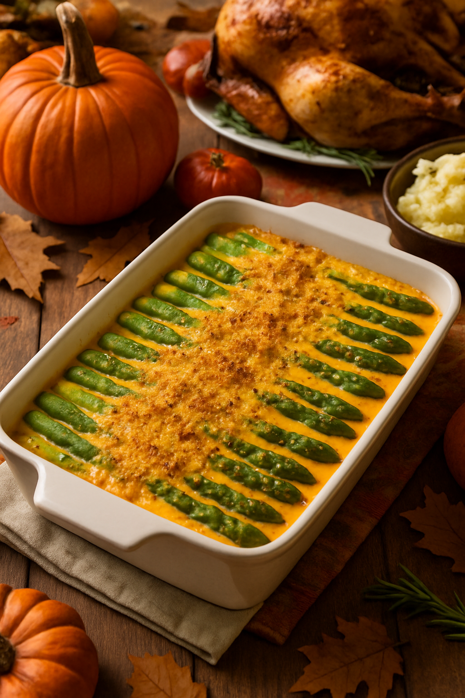

Asparagus Cajun Hollandaise Casserole
Developed by Cook Anything Kitchen
Ingredients
Asparagus
- 2 lbs asparagus, trimmed
- 1 tbsp olive oil
- 1 tsp salt, divided
- ½ tsp black pepper
- ½ tsp garlic powder (optional)
Cajun Cream Hollandaise Sauce (Oven-Safe)
- 3 tbsp butter
- 2 tbsp flour
- 1½ cups heavy cream
- 1 tbsp lemon juice
- 1–1½ tsp Cajun seasoning
- ½ tsp smoked paprika
- Pinch cayenne pepper (optional)
- ¼–½ tsp salt, to taste
- ½ cup grated Parmesan cheese (optional, for richness and browning)
Optional Topping
- ½ cup panko breadcrumbs
- 2 tbsp melted butter
- Additional Parmesan cheese (optional)
- Pinch of Cajun seasoning or paprika, for color
Directions
- Pre-cook the asparagus: Preheat oven to 400°F (205°C). Toss asparagus pieces with olive oil, black pepper, garlic powder if using, and ½ teaspoon of the salt. Spread in a single layer on a baking sheet and roast for 8–10 minutes, until bright green and just starting to soften. Transfer the roasted asparagus to a 9×13-inch casserole dish.
- Make the Cajun cream hollandaise: In a saucepan, melt the butter over medium heat. Add the flour and whisk for about 30 seconds until bubbly but not browned. Slowly whisk in the heavy cream until smooth. Stir in the Cajun seasoning, smoked paprika, lemon juice, cayenne if using, and remaining salt. Simmer for 2–3 minutes, whisking, until slightly thickened. Stir in Parmesan cheese if using, and adjust seasoning to taste.
- Assemble the casserole: Pour the Cajun cream hollandaise evenly over the asparagus in the casserole dish. Gently toss or shake the dish so the asparagus is well coated in the sauce.
- Add the topping (optional): In a small bowl, combine panko breadcrumbs with melted butter. Sprinkle the mixture evenly over the top of the casserole. Add extra Parmesan on top if desired.
- Bake: Bake uncovered at 400°F (205°C) for 18–22 minutes, or until the sauce is bubbling and the top is lightly golden. For deeper browning, broil for 1–2 minutes at the end, watching closely to prevent burning.
- Serve: Let the casserole rest for a few minutes, then serve warm. Spoon extra sauce from the bottom of the dish over each portion and garnish with a pinch of Cajun seasoning or fresh parsley, if desired.
Notes
- Pre-roasting the asparagus helps prevent a watery casserole and keeps the spears from turning mushy.
- The Cajun sauce should taste boldly seasoned before baking, as the flavors mellow once baked with the asparagus.
- For a lighter version, you can substitute half-and-half for part of the heavy cream, but the sauce will be slightly less rich.
- Adjust the cayenne and Cajun seasoning to your preferred spice level; start with less and add more after tasting.
- This casserole pairs especially well with grilled or roasted chicken, steak, salmon, or shrimp.
- Leftovers reheat well in the oven at 325°F, covered, until warmed through; avoid microwaving too long to prevent the sauce from breaking.
Nutritional Information
Serving Size: 8 servings
Calories: 260
Fat: 24 g
Carbohydrates: 8 g
Protein: 5 g